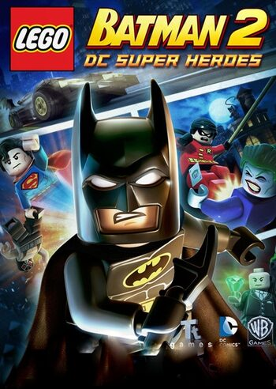
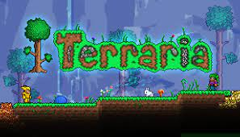
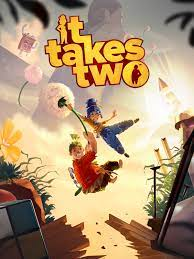
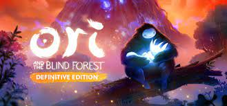
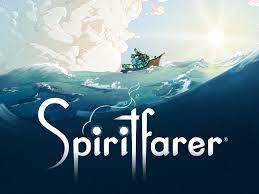

Lego Batman 2: DC Super Heroes

começando a minha lista em quinto lugar esta o Lego Batman 2: DC Super Heroes, este é o jogo que mais joguei na minha vida, passei em media 1000 horas nesse jogo, talvez se não fosse o apego emocional que eu tenho com esse jogo ele nem estaria na lista, pois o jogo não é tao grandioso assim, inclusive eu ate hoje me lembro de vários bugs que me acontecerão enquanto eu jogava, bugs que me travaram por dias para eu conseguir passar, por isso ele não entrara numa posição mais alta, mas ele entrara aqui porque esse jogo me aproximou mais do meu irmão que eu não gostava dele na época, aposto que se a gente não tivesse jogado esse jogo nos não seriamos amigos hoje em dia, agora conheceremos o quarto lugar.
terraria

Em quarto lugar vem um jogo que me marcou muito, terraria, um jogo sandbox de exploração 2D, este jogo a primeira vista parece simples mas ele esconde uma complexidade por trás gigante, atualmente, ele possui mais de 3.000 itens incluindo armas, ferramentas, armaduras, munições, magias, poções mágicas, montarias, pets e materiais de construção. Este jogo eu tenho mais de 300 horas, e por que esse jogo me marcou tanto? Simples esse jogo foi o que fez eu voltar a gostar de jogos, pois numa época da minha vida que eu estava bem desanimado com tudo, eu tinha parado de gostar completamente de jogos, mas esse jogo me fez ter a paixão por videogames novamente por isso ele fica nessa posição, agora conheceremos o terceiro lugar.
it takes two

Em terceiro lugar vem o jogo mais recente que joguei nessa lista It Takes Two, um jogo sobre colaboração, este jogo conta a história de um casal prestes a se separar, quando derrepente um livro misterioso prende eles dentro de bonecos, e agora eles precisão se ajudar para sair de dentro dos bonecos. Este jogo é um pouco mais curto que os outros da lista pois eu terminei em 20 horas, e a única coisa que posso dizer sobre o final é que é um final muito gratificante, como escrevi na introdução esse jogo trata sobre colaboração em equipe então o co-op é obrigatório e eu joguei inteiro com meu irmão e este jogo foi incrível, It Takes Two recebeu o prêmio de jogo do ano em 2021 e eu não esperava que seria tão bom, realmente as críticas desse jogo não estavam pra brincadeira com o quanto este jogo é fantástico, por isso ele ocupara o terceiro lugar na minha lista, agora chegou a vez da próxima posição.
Ori and the Blind Forest

Em segundo lugar vem o jogo que me fez ter amor por um estilo de jogo, agora é a vez de Ori and the Blind Forest, contando um pouco da história, “Ori And The Blind Forest” conta a história de Ori, um espírito materializado que foi adotado por Naru, uma espécie de urso que há muito tempo vivia em uma floresta encantada. Certo dia, a escassez de comida e água dizimam os recursos naturais do local, causando a morte Naru. Ori se vê sozinho na imensidão verde e assume a responsabilidade de explorar a floresta para sobreviver e, com um pouco de sorte, trazer Naru de volta para perto de si. Este jogo me marcou porque ele é leve e calmo mas tenso nos momentos certos, eu terminei em 20 horas também mas não quer dizer que ele seja tao curto inclusive eu terminei ele bem rápido e eu queria que não tivesse sido assim pois o jogo tem uma trilha sonora impecável e comandos precisos fazendo assim um jogo incrível, mas porque ele não está em primeiro? Descobriremos agora com o primeiro lugar
Spiritfarer

E finamente em primeiro lugar vem um jogo que mais me marcou, Spiritfarer. O Spiritfarer é um jogo agradável de gerenciamento sobre a morte. Como capitão da balsa para os mortos, construa um barco para explorar o mundo, cuide de seus amigos espirituais e os guie através de mares místicos para finalmente liberá-los para a vida após a morte. Por onde começar, este jogo quando eu vi os trailers eu não esperava nada dele, ate que o YouTube me recomendou um vídeo sobre este e jogo, depois disso eu decidi comprar o jogo, e eu simplesmente amei o jogo, sério, a ambientação, a trilha sonora, os gráficos, tudo é muito bem-feito e eu me emocionei do início ao fim, eu joguei 100 horas desse jogo, ele não é tão longo mas se você quiser fazer tudo você ira demorar bastante inclusive recentemente ele recebeu um porte para o celular e não é tao completo quanto a versão de computador mas ainda sim é bem completo, se você quer a experiência completa eu recomendo a versão de console pois é a versão mais bonita sem dúvidas esse é o jogo que eu mais recomento, agora darei algumas dicas sobre cada jogo.